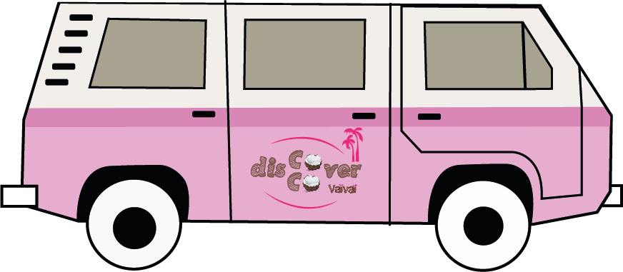

Il nous aura fallu traverser l'atlantique, direction Santa Theresa - Rio de Janeiro, pour enfin trouver notre "cocojito" parfait.
Grâce à Joao. Entre ses aventures sportives et ses recettes santé, ils nous sert sa recette "healthy" du virgin mojito, sans alcool mais avec de l'eau de coco. Un délice. La saveur délicate de l'eau de coco s'associe parfaitement au limao (jus de citron vert) et à la fraîcheur de la menthe, et donne une sensation très douce.
Le résultat est aussi festif et exotique que rafraichissant. Bref, un virgin coco-jito perfeito!
Nous on adore. Et vous ?
L'eau de coco sélection Fraîcheur ravira tous les amateurs d'eau de coco. En effet, sa saveur de noix de coco est plus prononcée et son goût, encore plus doux !
Notre jus de coco Sélection Fraîcheur est le résultat d'un travail effectué main dans la main avec nos partenaires-producteurs. Avec eux, nous sélectionnons uniquement les plus jeunes noix de coco des plantations. Ainsi, nous obtenons une eau de coco au parfum de coco plus prononcé, de manière parfaitement naturelle.
Toujours aussi légère, désaltérante et rafraîchissante, l'eau de coco Sélection Fraîcheur offre encore plus de douceur pour toujours plus de gourmandise.
Sélectionnées avec soin avec nos partenaires-producteurs indonésiens, l’eau de coco 100% naturelle Vaïvaï est une eau de coco 100% pur jus, et donc sans aucun ajout. Récoltée au coeur des noix de coco, elle possède une délicate saveur de coco ainsi qu'une texture légère et particulièrement douce.
Le jus de coco est consommé depuis des millénaires par les habitants des pays tropicaux. En effet, l'eau de coco est particulièrement désaltérante et rafraichissante. Ce qui en fait une boisson idéale pour vous accompagner tout au long de votre journée.
C'est à Ibiza, dans les débuts de Vaïvaï, que nous présentons notre eau de coco à une amie (barmaid). Au cours de la soirée, celle-ci nous propose de tester notre eau de coco dans un cocktail inspiré du daïquiri, mélangeant jus de fraises et de citron vert.
Une recette qui avait tout pour nous plaire, avec son goût ultra fruité de fraise, réhaussé par la pointe de jus de citron vert et pourtant particulièrement douce grâce à l'eau de coco. Une recette gourmande, surprenante et rafraîchissante, idéale pour une une pause plaisir et fraicheur ou en cocktail de soirée ;)
L'eau de coco Vaïvaï s'associe à 14% de fruits de la passion pour un mélange particulièrement riche en sensations. La saveur douce de l'eau de coco est réhaussée d'une pointe d'acidité par le jus de Maracujá (fruit de la passion au brésil) et permet de faire ressortir toute la saveur du mélange. Avec juste ce qu'il faut de sucre de canne et d'eau, pour équilibrer le mélange entre plaisir et légèreté, l'eau de coco fruit de la passion Vaïvaï vous rafraîchit à chaque instant de votre journée.
L'huile de coco désodorisée, 100% végétale et biologique est parfaite pour une cuisson neutre de vos légumes, viandes ou poisson.
Désodorisée grâce à un simple passage à la vapeur d'eau, cette huile de coco biologique n'a ni goût, ni odeur et s'utilisera donc facilement dans tous type de recettes, en remplacement du beurre par exemple, ou de l'huile de cuisine classique.
L'huile de coco vierge a gagné sa place dans les cuisines grâce à ses qualités culinaires pour cuire vos légumes, viandes ou poissons.
Cette huile 100% végétale et biologique est en effet idéale pour toute les cuissons. Notamment à haute température et même la friture !
Facilement assimilable par l'organisme, elle se substitue parfaitement au beurre (dans les patisseries par exemple).
Obtenue en pressant la chair fraiche de la noix de coco, elle conserve un léger goût de coco. De quoi donner une touche d'exotisme à votre cuisine.
C'est dans la vieille ville de Sao Tomé (Sao Tomé-et-Principe, Afrique), dans un tout petit bar à jus sans nom, que l'on a découvert le mélange parfait entre l'eau de coco et le jus de mangue. L'eau de coco apporte toute sa légèreté et sa fraîcheur à l'onctuosité et au goût suave du jus de mangue. Une recette tout en douceur, délicieusement rafraîchissante, idéale pour débuter la journée ou pour une pause rafraichissante et gourmande.
Découvrez les pétales de coco, notre recette originale. C'est la gourmandise idéale pour tropicaliser vos apéritifs ou pour donner une saveur exotique à vos pauses gourmandes.
En effet, nos pétales sont constitués de la chair de la noix de coco, finement découpée, et tout simplement toastée au four. Nous n'ajoutons donc aucune matière grasse. Ensuite, les pétales sont légèrement assaisonnés, avec une pointe de sel et de sucre. Résultat, nos pétales de coco Vaïvaï sont terriblement croustillants... et addictifs (on vous aura prévenu !).